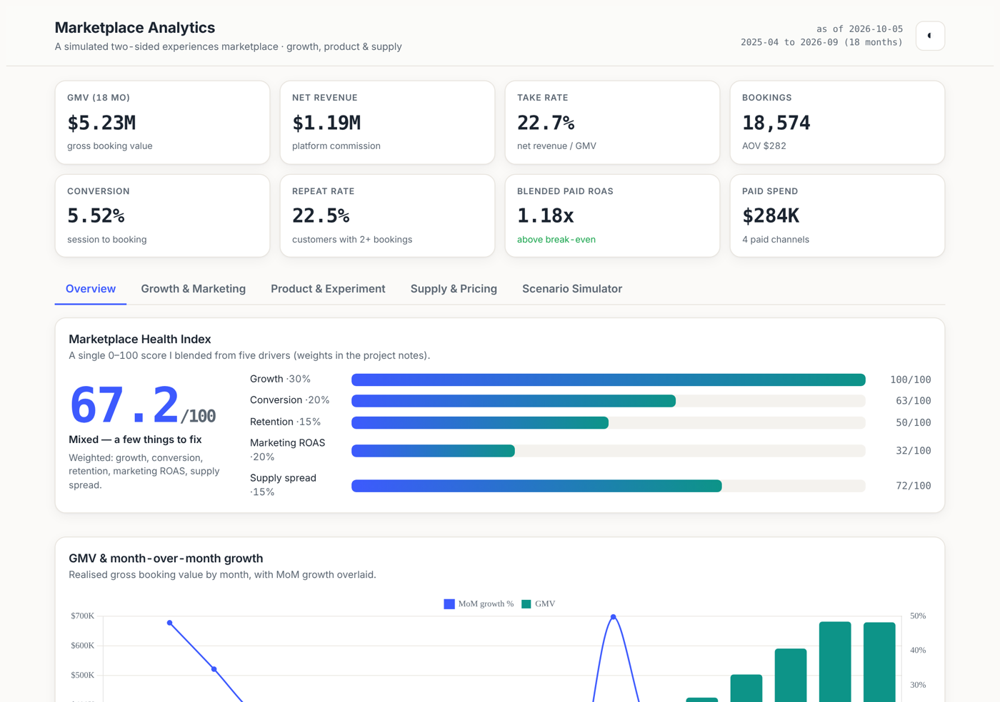
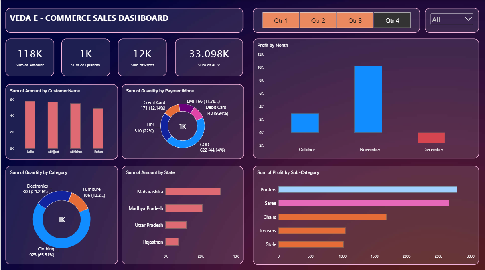
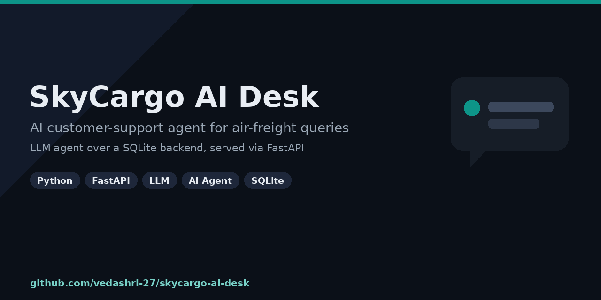

<title>Vedashri Kshirsagar</title>
<link rel="preconnect" href="https://fonts.gstatic.com" crossorigin>
<link rel="stylesheet" href="https://fonts.googleapis.com/css2?family=Bricolage+Grotesque:opsz,wght@12..96,500;12..96,600;12..96,700&family=Manrope:wght@400;500;600;700&display=swap">
<style>
  /* Light-pink bento dashboard · blue primary + yellow secondary accent */
  :root{
    --bg:#FDEEF3; --bg2:#FBE3EE; --card:#FFFBFD; --ink:#1A1420; --muted:#6B5E68; --faint:#9B8C97;
    --line:#F3D9E4; --line2:#EFE2E9;
    --blue:#2F5BEA; --blue-soft:#E7ECFF; --yellow:#F6B51E; --yellow-soft:#FFF3D4; --pink:#E8558C;
    --shadow:0 1px 2px rgba(80,30,60,.05), 0 12px 30px rgba(120,40,90,.07);
    --shadow-hi:0 2px 6px rgba(80,30,60,.08), 0 18px 44px rgba(47,91,234,.15);
    --r:20px;
    --disp:"Bricolage Grotesque",ui-sans-serif,Georgia,serif;
    --body:"Manrope",ui-sans-serif,system-ui,-apple-system,Segoe UI,Roboto,sans-serif;
    color-scheme:light;
  }
  *{box-sizing:border-box}
  html,body{margin:0}
  body{background:
      radial-gradient(1100px 520px at 88% -8%, #FFE7C2 0%, transparent 55%),
      radial-gradient(1000px 520px at -8% 6%, #DCE4FF 0%, transparent 52%),
      var(--bg);
    color:var(--ink);font-family:var(--body);line-height:1.5;-webkit-font-smoothing:antialiased}
  .wrap{max-width:1140px;margin:0 auto;padding-inline:20px}
  a{color:inherit;text-decoration:none}

  /* nav */
  nav.top{position:sticky;top:env(safe-area-inset-top,0px);z-index:30;
    background:color-mix(in srgb,var(--bg) 82%,transparent);backdrop-filter:blur(10px);
    border-bottom:1px solid var(--line)}
  .nav-row{display:flex;align-items:center;gap:16px;padding-block:13px}
  .logo{font-family:var(--disp);font-weight:700;font-size:16px;letter-spacing:-.01em}
  .logo .dot{color:var(--pink)}
  .nav-links{margin-left:auto;display:flex;gap:4px;flex-wrap:wrap}
  .nav-links a{font-size:13.5px;font-weight:600;color:var(--muted);padding:7px 11px;border-radius:9px}
  .nav-links a:hover{color:var(--blue);background:var(--blue-soft)}
  .nav-cta{font-size:13.5px;font-weight:700;color:#fff!important;background:var(--blue);
    padding:8px 14px!important;border-radius:10px!important}
  .nav-cta:hover{background:#2347c9}
  @media(max-width:620px){.nav-links a:not(.nav-cta){display:none}}

  section.block{padding-block:30px}
  .eyebrow{font-size:11px;letter-spacing:.14em;text-transform:uppercase;color:var(--pink);font-weight:700}
  h2.sec{font-family:var(--disp);font-weight:600;font-size:clamp(22px,3.4vw,30px);letter-spacing:-.015em;margin:8px 0 18px;text-wrap:balance}

  .grid{display:grid;grid-template-columns:repeat(4,1fr);gap:16px;grid-auto-flow:dense}
  @media(max-width:900px){.grid{grid-template-columns:repeat(2,1fr)}}
  @media(max-width:560px){.grid{grid-template-columns:1fr}}
  .card{background:var(--card);border:1px solid var(--line2);border-radius:var(--r);padding:22px;
    box-shadow:var(--shadow);min-width:0;position:relative;transition:transform .18s, box-shadow .18s}
  .card:hover{transform:translateY(-3px);box-shadow:var(--shadow-hi)}
  .span2{grid-column:span 2}.span3{grid-column:span 3}.span4{grid-column:span 4}.row2{grid-row:span 2}
  @media(max-width:560px){.span2,.span3,.span4{grid-column:span 1}.row2{grid-row:auto}}

  /* hero */
  .hero{display:flex;flex-direction:column;justify-content:space-between;gap:18px;
    background:linear-gradient(155deg,#FFFBFD 0%,#FFF4F8 55%,#FDEBF8 100%)}
  .avatar{width:58px;height:58px;border-radius:16px;background:linear-gradient(135deg,var(--blue),#6F86F7);
    display:grid;place-items:center;color:#fff;font-family:var(--disp);font-weight:700;font-size:24px;
    box-shadow:0 8px 20px rgba(47,91,234,.3)}
  .hero h1{font-family:var(--disp);font-weight:700;font-size:clamp(30px,5vw,46px);line-height:1.02;
    margin:14px 0 8px;letter-spacing:-.02em;text-wrap:balance}
  .hero .role{font-size:15px;color:var(--blue);font-weight:700}
  .hero .tag{font-size:14.5px;color:var(--muted);margin-top:10px;max-width:48ch}
  .badge{display:inline-flex;align-items:center;gap:7px;font-size:12.5px;font-weight:700;color:#1b7a3e;
    background:#E4F7EC;border:1px solid #C7EED6;padding:5px 11px;border-radius:999px;margin-top:14px}
  .badge .pulse{width:8px;height:8px;border-radius:50%;background:#1DBF5B}
  .cta{display:flex;flex-wrap:wrap;gap:10px}
  .btn{display:inline-flex;align-items:center;gap:8px;font-size:13.5px;font-weight:700;padding:10px 16px;
    border-radius:12px;border:1px solid var(--line);background:#fff;cursor:pointer}
  .btn:hover{border-color:var(--blue);color:var(--blue)}
  .btn.primary{background:var(--blue);color:#fff;border-color:var(--blue)}
  .btn.primary:hover{background:#2347c9;color:#fff}
  .btn.yellow{background:var(--yellow);color:#4a3600;border-color:var(--yellow)}
  .btn.yellow:hover{background:#eaa800;color:#4a3600}

  /* stat tiles */
  .stat{display:flex;flex-direction:column;justify-content:space-between;gap:10px}
  .stat .big{font-family:var(--disp);font-weight:700;font-size:40px;letter-spacing:-.02em;line-height:1}
  .c-blue{color:var(--blue)} .c-pink{color:var(--pink)} .c-yellow{color:#D99400}
  .stat .lbl{font-size:13px;color:var(--muted);font-weight:600}
  .spark{height:34px;width:100%}

  .card p{margin:0;color:var(--muted);font-size:14px}
  .card p.lead{color:var(--ink)}
  .chips{display:flex;flex-wrap:wrap;gap:8px}
  .chip{font-size:12.5px;font-weight:600;padding:6px 12px;border-radius:999px;background:#FBEAF1;color:#7a4a60;border:1px solid var(--line)}
  .chip.key{background:var(--blue-soft);color:var(--blue);border-color:#CED9FF}
  .chip.y{background:var(--yellow-soft);color:#8a6400;border-color:#F3DCA0}

  /* focus areas */
  .focus{display:flex;flex-direction:column;gap:8px}
  .focus h3{font-family:var(--disp);font-size:16px;font-weight:600;margin:0}
  .focus .ic{width:34px;height:34px;border-radius:10px;display:grid;place-items:center;font-size:17px;margin-bottom:4px}
  .ic.b{background:var(--blue-soft)} .ic.y{background:var(--yellow-soft)} .ic.p{background:#FCE3EE}

  /* projects */
  .proj{display:flex;flex-direction:column;gap:0;padding:0;overflow:hidden}
  .proj .shot{width:100%;aspect-ratio:16/9;object-fit:cover;object-position:top;border-bottom:1px solid var(--line2);background:#f3eef2}
  .proj .body{padding:18px 20px 20px}
  .proj .top{display:flex;align-items:center;justify-content:space-between;gap:10px;margin-bottom:8px}
  .proj h3{font-family:var(--disp);font-weight:600;font-size:18px;margin:0;letter-spacing:-.01em}
  .proj .tech{font-size:11.5px;color:var(--faint);font-weight:700;letter-spacing:.03em}
  .proj p{font-size:13.5px;margin-bottom:12px}
  .arrow{color:var(--blue);font-weight:700;font-size:13px}
  .arrow:hover{text-decoration:underline}

  /* experience */
  .xp h3{font-family:var(--disp);font-weight:600;font-size:16px;margin:0}
  .xp .meta{font-size:12.5px;color:var(--faint);font-weight:600;margin:2px 0 8px}
  .xp ul{margin:0;padding-left:18px;color:var(--muted);font-size:13.3px}
  .xp li{margin-bottom:5px}

  .edu-item{padding:9px 0;border-bottom:1px dashed var(--line);}
  .edu-item:last-child{border-bottom:0}
  .edu-item .d{font-weight:700;font-size:14px}
  .edu-item .s{font-size:12.5px;color:var(--muted)}
  .edu-item .y{font-size:12px;color:var(--faint);font-weight:700}
  .cert{display:flex;align-items:center;gap:10px;font-size:13.5px;padding:7px 0;color:var(--ink);font-weight:500}
  .cert .tick{width:20px;height:20px;border-radius:6px;background:var(--yellow-soft);color:#b07c00;display:grid;place-items:center;font-size:12px;font-weight:800;flex:none}

  .contact{background:linear-gradient(135deg,#FFF6FB,#F3F6FF);text-align:center}
  .contact a.mail{color:var(--blue);font-weight:700;word-break:break-all}
  footer{padding:26px 0 40px;text-align:center;color:var(--faint);font-size:12.5px}
</style>

<nav class="top">
  <div class="wrap nav-row">
    <div class="logo">Vedashri Kshirsagar<span class="dot">.</span></div>
    <div class="nav-links">
      <a href="#about">About</a>
      <a href="#projects">Projects</a>
      <a href="#experience">Experience</a>
      <a href="#contact">Contact</a>
      <a class="nav-cta" href="https://github.com/vedashri-27" target="_blank" rel="noopener">GitHub</a>
    </div>
  </div>
</nav>

<main>
  <!-- HERO + STATS -->
  <section class="wrap block" id="top">
    <div class="grid">
      <div class="card hero span2 row2">
        <div>
          <div class="avatar">VK</div>
          <h1>Vedashri&nbsp;Kshirsagar</h1>
          <div class="role">Data Analyst · Business &amp; Product Analyst · Applied AI</div>
          <p class="tag">I turn messy data into clear decisions — writing the SQL, finding the root cause, and shipping the dashboard someone actually uses.</p>
          <div class="badge"><span class="pulse"></span> Open to work · Pune, India</div>
        </div>
        <div class="cta">
          <a class="btn primary" href="https://github.com/vedashri-27" target="_blank" rel="noopener">GitHub</a>
          <a class="btn" href="https://www.linkedin.com/in/vedashri-k" target="_blank" rel="noopener">LinkedIn</a>
          <a class="btn yellow" href="Vedashri_Kshirsagar_Resume.pdf" target="_blank" rel="noopener">Résumé ↓</a>
        </div>
      </div>

      <div class="card stat"><div class="eyebrow">Experience</div><div class="big c-blue">2+ yrs</div><div class="lbl">Data &amp; backend at Yardi</div></div>
      <div class="card stat"><div class="eyebrow">Shipped</div><div class="big c-pink">3</div><div class="lbl">End-to-end projects</div></div>
      <div class="card stat">
        <div class="eyebrow">Trajectory</div>
        <svg class="spark" viewBox="0 0 120 34" preserveAspectRatio="none" aria-hidden="true">
          <polyline points="2,30 20,26 38,24 56,17 74,18 92,9 110,5 118,3" fill="none" stroke="#2F5BEA" stroke-width="2.6" stroke-linecap="round" stroke-linejoin="round"/>
          <circle cx="118" cy="3" r="3.2" fill="#F6B51E"/>
        </svg>
        <div class="lbl">SQL → BI → AI</div>
      </div>
      <div class="card stat"><div class="eyebrow">Credential</div><div class="big c-yellow">SQL</div><div class="lbl">Advanced · HackerRank</div></div>
    </div>
  </section>

  <!-- ABOUT + SKILLS -->
  <section class="wrap block" id="about">
    <div class="eyebrow">About</div>
    <h2 class="sec">A quick introduction</h2>
    <div class="grid">
      <div class="card span2">
        <p class="lead">At Yardi I work with SQL Server — building and optimizing queries, investigating production data issues, automating database processes, and supporting AI-driven features on the Virtuoso initiative. Alongside work I build analytics and AI projects to keep sharpening the craft, and I'm pursuing an MBA in Operations to pair the technical side with business thinking.</p>
      </div>
      <div class="card span2">
        <div class="eyebrow">Toolbox</div>
        <h3 style="font-family:var(--disp);font-weight:600;font-size:16px;margin:8px 0 12px">Skills</h3>
        <div class="chips">
          <span class="chip key">SQL</span><span class="chip key">T-SQL</span><span class="chip key">Python</span>
          <span class="chip key">Power BI</span><span class="chip">DAX</span><span class="chip">Excel</span>
          <span class="chip">SQL Server</span><span class="chip y">dbt</span><span class="chip">Data Analysis</span>
          <span class="chip">Data Validation</span><span class="chip">ETL &amp; Automation</span>
          <span class="chip">Root-Cause Analysis</span><span class="chip">Dashboards</span><span class="chip">Git</span>
        </div>
      </div>
    </div>
  </section>

  <!-- WHAT I DO -->
  <section class="wrap block">
    <div class="eyebrow">How I help</div>
    <h2 class="sec">What I do</h2>
    <div class="grid">
      <div class="card focus"><div class="ic b">📊</div><h3>Analyze</h3><p>Dig into data with SQL and Python — funnels, cohorts, root-cause — to answer the questions behind the numbers.</p></div>
      <div class="card focus"><div class="ic y">📈</div><h3>Visualize</h3><p>Build Power BI dashboards and reports people can actually self-serve, with clean DAX measures.</p></div>
      <div class="card focus"><div class="ic p">⚙️</div><h3>Automate</h3><p>Turn repetitive database and reporting work into reliable, automated processes.</p></div>
      <div class="card focus"><div class="ic b">🤖</div><h3>Apply AI</h3><p>Prototype AI/LLM applications and support data quality for AI-driven features.</p></div>
    </div>
  </section>

  <!-- PROJECTS -->
  <section class="wrap block" id="projects">
    <div class="eyebrow">Selected work</div>
    <h2 class="sec">Projects</h2>
    <div class="grid">
      <div class="card proj span2">
        
        <div class="body">
          <div class="top"><h3>Marketplace Analytics</h3><span class="tech">SQL · dbt · PYTHON</span></div>
          <p>End-to-end analytics on a simulated marketplace: conversion funnel, channel ROAS/CAC, cohort retention, A/B-test significance, and an interactive dashboard on a tested dbt warehouse layer.</p>
          <a class="arrow" href="https://github.com/vedashri-27/marketplace-analytics" target="_blank" rel="noopener">View on GitHub →</a>
        </div>
      </div>
      <div class="card proj span2">
        
        <div class="body">
          <div class="top"><h3>E-Commerce Sales Dashboard</h3><span class="tech">POWER BI · DAX</span></div>
          <p>Single-page sales dashboard — revenue, profit, AOV, category and payment mix — with DAX measures and quarter-level slicers for self-serve analysis.</p>
          <a class="arrow" href="https://github.com/vedashri-27/powerbi-ecommerce-dashboard" target="_blank" rel="noopener">View on GitHub →</a>
        </div>
      </div>
      <div class="card proj span2">
        
        <div class="body">
          <div class="top"><h3>SkyCargo AI Desk</h3><span class="tech">PYTHON · FASTAPI · LLM</span></div>
          <p>AI customer-support agent for air-freight queries using an LLM agent framework over a SQLite backend, served through a FastAPI service.</p>
          <a class="arrow" href="https://github.com/vedashri-27/skycargo-ai-desk" target="_blank" rel="noopener">View on GitHub →</a>
        </div>
      </div>
      <div class="card span2" style="display:flex;flex-direction:column;justify-content:center;align-items:flex-start;gap:10px;background:linear-gradient(135deg,#FFF7FB,#EFF3FF)">
        <h3 style="font-family:var(--disp);font-weight:600;font-size:18px;margin:0">More on GitHub</h3>
        <p>Code, READMEs and the full build for each project live on my GitHub.</p>
        <a class="btn primary" href="https://github.com/vedashri-27" target="_blank" rel="noopener">Browse all repos →</a>
      </div>
    </div>
  </section>

  <!-- EXPERIENCE + EDUCATION + CERTS -->
  <section class="wrap block" id="experience">
    <div class="eyebrow">Background</div>
    <h2 class="sec">Experience &amp; education</h2>
    <div class="grid">
      <div class="card xp span2">
        <h3>Software Engineer — Data &amp; Backend</h3>
        <div class="meta">Yardi Software India Pvt. Ltd. · Feb 2024 – Present · Pune</div>
        <ul>
          <li>Build and optimize SQL Server objects and complex T-SQL queries powering core product features.</li>
          <li>Investigate production data issues through root-cause analysis, validation and reconciliation.</li>
          <li>Contribute to <strong>Virtuoso</strong>, Yardi's AI initiative — preparing and validating data for AI features.</li>
          <li>Automate database processes and monitor SQL jobs to keep systems reliable.</li>
        </ul>
      </div>
      <div class="card">
        <div class="eyebrow">Education</div>
        <h3 style="font-family:var(--disp);font-weight:600;font-size:16px;margin:8px 0 6px">Learning</h3>
        <div class="edu-item"><div class="d">MBA, Operations <span class="y">· 2025–27</span></div><div class="s">NMIMS (Narsee Monjee), Mumbai — in progress</div></div>
        <div class="edu-item"><div class="d">B.Tech, Computer Science <span class="y">· 2020–24</span></div><div class="s">MGM University, JNEC, Chh. Sambhajinagar</div></div>
      </div>
      <div class="card">
        <div class="eyebrow">Certifications</div>
        <h3 style="font-family:var(--disp);font-weight:600;font-size:16px;margin:8px 0 6px">Certified</h3>
        <div class="cert"><span class="tick">✓</span> SQL (Advanced) — HackerRank</div>
        <div class="cert"><span class="tick">✓</span> IBM Python for Data Science, AI &amp; Development</div>
      </div>
    </div>
  </section>

  <!-- CONTACT -->
  <section class="wrap block" id="contact">
    <div class="card contact span4">
      <div class="eyebrow">Get in touch</div>
      <h2 class="sec" style="margin-bottom:10px">Let's build something with data</h2>
      <p style="max-width:52ch;margin:0 auto 16px">Open to Data Analyst, Business/Product Analyst and applied-AI roles. The fastest way to reach me is email.</p>
      <div class="cta" style="justify-content:center">
        <a class="btn primary" href="mailto:vedashriak2711@gmail.com">✉ Email me</a>
        <a class="btn" href="https://www.linkedin.com/in/vedashri-k" target="_blank" rel="noopener">LinkedIn</a>
        <a class="btn" href="https://github.com/vedashri-27" target="_blank" rel="noopener">GitHub</a>
      </div>
      <p style="margin-top:14px"><a class="mail" href="mailto:vedashriak2711@gmail.com">vedashriak2711@gmail.com</a></p>
    </div>
  </section>

  <footer>© 2026 Vedashri Kshirsagar · Designed &amp; built as a single page</footer>
</main>
